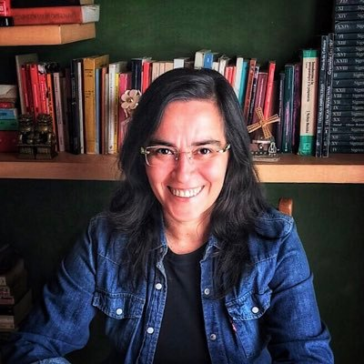

<div class="container-fluid">
<div class="row">
    <div class="col-xs-12 col-sm-4 col-md-4 col-lg-4">
        
        <p id="nombre">Mariana Aran</p>
        <p id="titulo">Full Stack Developer Jr.</p>
    </div>
    
<div class="col-xs-12 col-sm-7 col-md-7 col-lg-7">
    <span>
        <h1 id="acerca">Acerca de:</h1>
        <p>Mariana Aran nació en Buenos Aires en 1972. Vive en la ciudad de Mendoza. Es periodista y escritora. Ha publicado el libro "Luces, Sombras y Claroscuros" para Editorial Haley. En la actualidad, realiza tareas de consultoría IT como Full Stack Developer Jr. y desarrolla contenidos narrativos para diferentes medios. Ha completado los cursos de Argentina Programa #SéProgramar y #YoProgramo durante el año 2022.</p>
    </span>
</div>
</div>
</div>

